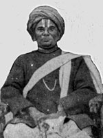
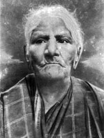
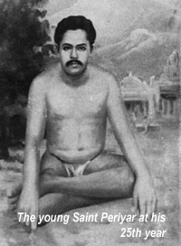

Erode Venkata Ramasamy was born on 17 September 1879 to a Kannada Balija merchant family in Erode, then a part of the Coimbatore district of the Madras Presidency. E. V. Ramasamy's father is Venkatappa Nayakar (or Venkata), and his mother was Chinnathyee, Muthammal.   He had one elder brother named Krishnaswamy and two sisters named Kannamma and Ponnuthoy.Venkatar and Chinnathai had been childless for 10 years into their marriage.They had visited many temples and soon became devotees of Lord Vishnu of Tirupati. Thus when their boys were born they named them Krishnasamy and Ramasamy after the avatars of Lord Vishnu. Ramasamy was always full of questions and mischief. When Periyar was five years old his father gave him up in adoption to his grand aunt to run the household for her. When he was sent to school his parents observed caste rituals strictly and forbade him from touching people of certain other castes.If he did so he had to bathe to get rid of the impurities. But this did not stop him from drinking water at one of his friend’s houses and having snacks with him who was a bamboo weaver and Muslim. Periyar’s father had enough of this and stopped Periyar from going to school. At a young age, he began questioning the apparent contradictions in the Hindu mythological stories.  As Periyar grew, he felt that people used religion only as a mask to deceive innocent people and therefore took it as one of his duties in life to warn people against superstitions and priests. He could speak three Dravidian languages: Kannada, Telugu and Tamil. Periyar attended school for five years after which he joined his father's trade at the age of 12(1891).